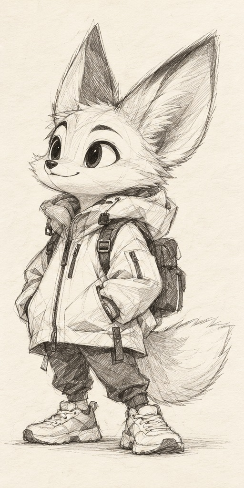
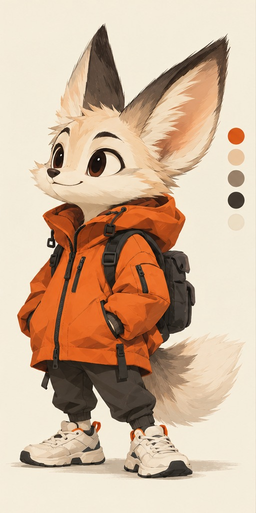
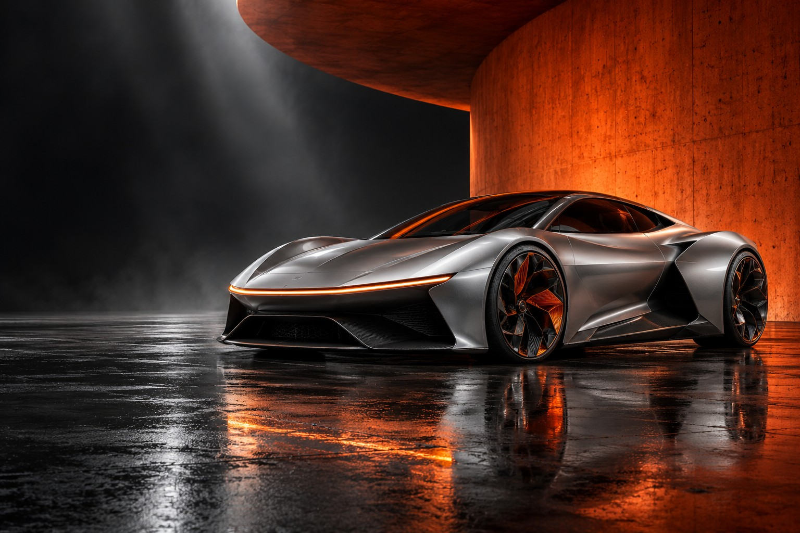

CHARACTER / SHORT FORM
01 / КОРОТКИЕ РОЛИКИМеньше секунд.
Меньше секунд.
Больше характера.
Персонажи, мини-истории, распаковки и взаимодействие с продуктом. Реклама для соцсетей с героем или без — точно под вашу задачу.
Убедительный герой начинается с характера.
Посмотрите, как идея обретает линии,
цвет, фактуру и объём.


Определяем роль героя, его темперамент и историю. Смелый исследователь — значит открытый взгляд, уверенная поза и узнаваемый силуэт.
Концептуальная демонстрация разработки персонажа. Изображения созданы для этой страницы; этапы переключаются интерактивно.
Ролики с персонажами и без.
Продукты, которым хочется доверять.
Истории, в которых хочется остаться.
Персонажи, мини-истории, распаковки и взаимодействие с продуктом. Реклама для соцсетей с героем или без — точно под вашу задачу.

BRAND / CINEMATIC FILMРекламные фильмы, брендовые истории и длинные ролики. Концепция, сценарий, раскадровка, визуалы, анимация, монтаж и звук — в одной системе.
Визуалы в этом разделе — новые концепты для демонстрации стиля, не клиентские кейсы.
Реклама, изображения и видео для брендов
из совершенно разных сфер — с единым
вниманием к идее, свету и деталям.
 01AUTO / AI FILM
01AUTO / AI FILMКинематографичная рекламная история, где город, скорость и свет превращают автомобиль в ощущение свободы.
 02BEAUTY / PRODUCT
02BEAUTY / PRODUCTМакросъёмка текстур и кожи для бьюти-ролика, в котором продукт ощущается чистым, тактильным и премиальным.
 03INDUSTRIAL / BRAND FILM
03INDUSTRIAL / BRAND FILMПромышленное пространство превращено в выразительный бренд-фильм с пролётами камеры, светом и масштабом.
 04BEVERAGE / CAMPAIGN
04BEVERAGE / CAMPAIGNЭнергичная кампания для напитка, соединяющая предметную красоту, летнюю атмосферу и музыкальный ритм.
 05TRAVEL / AI SERIES
05TRAVEL / AI SERIESЕдиная фотореалистичная серия о природных и архитектурных локациях России в одном свете и настроении.
Обложки и описания перенесены из исходного сайта.
Полные материалы появятся в подборке на Яндекс Диске.
Подключаюсь на отдельную задачу
или беру проект целиком —
от первого разговора до финального файла.
Художественные и рекламные изображения в любом стиле — от фотореализма до авторской графики.
Идея, драматургия, режиссёрское решение, сториборд и превиз до начала производства.
Оживление кадров, работа с движением и ритмом, цельная сборка коротких и длинных роликов.
Саунд-дизайн, цветокоррекция, ретушь, устранение AI-артефактов и адаптации под нужные форматы.
КАК РОЖДАЕТСЯ ИСТОРИЯ
Находим сильный рекламный ход, визуальный язык и точное настроение проекта.
Собираем драматургию, структуру ролика, тексты и режиссёрское решение.
Показываем ключевые сцены, ракурсы и монтажную логику до производства.
Генерируем и дорабатываем персонажей, локации, предметные и продуктовые кадры.
Превращаем изображения в движение, добавляем работу камеры, свет и динамику.
Собираем ритм, переходы и цельную историю под формат и задачу бренда.
Добавляем музыку, саунд-дизайн, атмосферу и при необходимости озвучку.
Финальная цветокоррекция, графика, ретушь, титры и адаптации под нужные форматы.
Результат Готовый рекламный ролик или кампания в единой визуальной системе, адаптированные под площадки бренда.
Более 5 лет соединяю режиссуру, дизайн, монтаж и возможности AI.
Работаю на стыке художественного изображения, анимации, графического дизайна, Photoshop, монтажа и режиссуры. Могу подключиться к отдельному этапу или взять проект целиком — от концепции и раскадровки до звука и финального постпродакшна.
Создаю статику в разных визуальных стилях, оживляю кадры, собираю ролики и вручную дорабатываю AI-материал: устраняю артефакты, выравниваю детали и довожу изображение до чистого коммерческого результата.
SELECTED CREDITS
Имиджевый рекламный ролик
Воссоздание семичасового фильма по книге Владимира Гиляровского · работа в команде
Рекламные ролики для брендов
Первый в мире полнометражный AI-мультфильм · работа в команде
Работа над анимационным проектом для платформы
Рекламные и имиджевые проекты для крупных заказчиков
Рекламная кампания для крупных дискаунтеров СНГ и Европы
Визуальный проект, посвящённый популяризации города
Проекты для технологических выставок в галереях
Короткий ролик или большой фильм.
Всё начинается с вашей идеи.